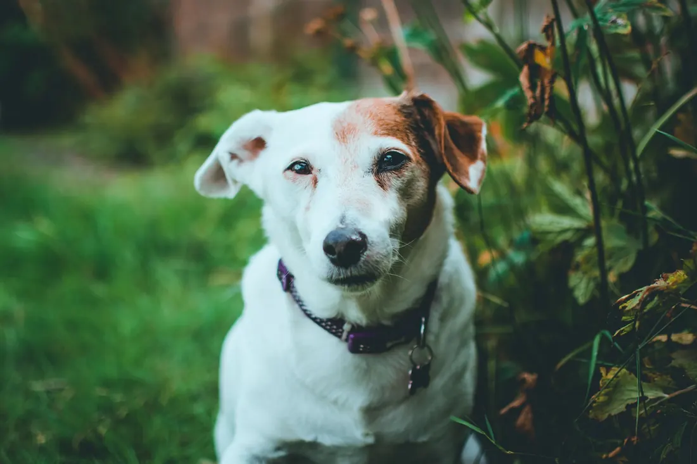

Bisswunden und Verletzungen
Eine Bisswunde sieht von außen oft klein aus. Unter der Haut ist der Schaden größer, und Keime aus dem Maul des anderen Tieres entzünden die Wunde schnell. Ich reinige und versorge die Verletzung bei Ihnen zu Hause.
Woran Sie es merken: Blutet · Leckt die Wunde · Schwellung

- Die Wunde blutet stark oder hört nach zehn Minuten nicht auf zu bluten.
- Der Biss sitzt am Hals, an der Brust, am Bauch oder in der Nähe der Augen.
- Ihre Katze hat eine Beule, die warm ist und weh tut. Das ist oft ein Abszess nach einem Biss.
- Ihr Tier humpelt nach dem Biss oder lässt sich nicht anfassen.
Was ich bei Ihnen mache
Ich schere das Fell rund um die Wunde, damit ich sehe, wie tief sie geht. Bei kleinen Wunden ist das oft schon die halbe Diagnose.
Dann spüle und desinfiziere ich die Wunde gründlich. Damit Ihr Tier dabei ruhig bleibt, bekommt es ein Schmerzmittel und, wenn nötig, ein Beruhigungsmittel.
Bisswunden behandle ich in der Regel mit einem Antibiotikum, weil sie sich häufig entzünden. Kleine Wunden versorge ich vor Ort, einen Abszess öffne und spüle ich.
Nach zwei bis drei Tagen sehe ich mir die Wunde noch einmal an.
Muss eine große Wunde in Narkose genäht werden, organisiere ich die Überweisung an eine Klinik in Mannheim und übernehme die Nachsorge zu Hause.
Bis ich bei Ihnen bin
- Drücken Sie bei starker Blutung ein sauberes Tuch auf die Wunde und halten Sie den Druck.
- Lassen Sie Ihr Tier die Wunde nicht lecken. Ein altes T-Shirt oder ein Halskragen hilft.
- Geben Sie keine Salben und keine Desinfektionsmittel aus dem Haushalt in die Wunde.
- Wurde Ihr Tier von einem fremden Tier gebissen, notieren Sie, wann und wo das war.
Was auf Sie zukommt
Ich rechne nach der Gebührenordnung für Tierärzte ab, dazu kommt die Hausbesuchsgebühr. Bevor ich behandle, sage ich Ihnen, womit Sie rechnen müssen.
Alles zur AbrechnungHäufige Fragen
Muss jede Bisswunde behandelt werden?
Ja, auch kleine. Gerade bei Katzen entsteht aus einem kleinen Biss innerhalb von zwei, drei Tagen ein Abszess. Je früher ich die Wunde reinige, desto kürzer ist die Behandlung.
Braucht mein Tier einen Halskragen?
Wenn es an die Wunde kommt, ja. Lecken hält die Wunde feucht und bringt neue Keime hinein.
[FEHLT: fachliche Freigabe der Texte durch Herrn Al Saeed]
Ich komme zu Ihnen nach Hause.
Rufen Sie an oder fragen Sie einen Termin an. Mein Team meldet sich so schnell wie möglich und macht mit Ihnen eine Uhrzeit aus.